Territoires · Entreprises · Transitions
Réussir votre programme de transformation en Nouvelle-Aquitaine
Les experts du conseil du territoire, une équipe de coordination dédiée à chaque mission.
L'AEPC Nouvelle-Aquitaine réunit plus de 50 consultants experts régionaux et place chaque projet sous la conduite d'une cellule de coordination : chef de projet, PMO et interlocuteur spécialiste. Un seul point de contact pour vous, des délais et une qualité tenus.
Votre équipe projet AEPC
Chef de projet
Votre interlocuteur unique, garant des engagements
PMO
Planning, livrables, reporting et contrôle qualité
Interlocuteur spécialiste
Expertise métier : éco-finance, aéronautique, RSE…
+ les consultants experts mobilisés selon votre filière
50+
consultants experts régionaux
1
équipe de coordination dédiée par projet
15
filières couvertes
30 ans
d'ancrage régional de la CPC NA
Qui sommes-nous
Notre raison d'être : aider les entreprises régionales à se transformer et à durer.
Transformation, performance, pérennité : nous mettons l'expertise d'un collectif régional au service des entreprises et des organisations qui font vivre la Nouvelle-Aquitaine.
Notre origine
Née de la volonté des consultants de la CPC NA
Créée en 2023 pour que les consultants de la région puissent répondre ensemble aux appels d'offres, sans passer par de grands cabinets nationaux. Une émanation de la Chambre Professionnelle du Conseil, active depuis plus de 30 ans.
Notre statut
Une association, pas un cabinet
Association loi 1901 à but non lucratif : pas d'actionnaire à rémunérer, une seule finalité, la réussite de vos projets et du territoire.
Notre ancrage
Des experts qui vivent ici
Plus de 50 consultants experts régionaux qui connaissent les filières, les cultures locales et les entreprises de chaque bassin.
Notre différence
Un collectif piloté
Une équipe de coordination dédiée à chaque projet, des experts choisis pour vos enjeux et une charte de déontologie commune.
Des compétences à 360°
mobilisables seules ou en équipe pluridisciplinaire
Nos consultants
Pourquoi choisir nos consultants ?
Plus de 50 experts régionaux, indépendants et engagés, réunis dans un collectif qui garantit leur sérieux.
Compétences spécifiques
Chaque consultant apporte une expertise unique, pour des conseils et des solutions adaptés à vos problématiques.
Expérience et fiabilité
Nos membres possèdent une expérience solide et une réputation de fiabilité reconnue dans leurs secteurs respectifs.
Approche personnalisée
Nous mettons un point d'honneur à comprendre vos besoins spécifiques pour vous proposer des solutions sur mesure.
Portraits publiés avec l'accord des consultants — la page « Nos consultants » présente chaque profil (expertises, filières, zone d'intervention)
Notre méthode
Pas un consultant isolé : une mission pilotée de bout en bout.
Chaque projet confié à l'AEPC est porté par une cellule de coordination dédiée. Elle compose l'équipe d'experts, suit l'avancement, contrôle les livrables et rend compte au donneur d'ordre.
01 · Vous
Le donneur d'ordre
Région, collectivité, OPCO, chambre consulaire ou entreprise : vous fixez les objectifs.
02 · La cellule AEPC
Coordination dédiée
Chef de projet, PMO, interlocuteur spécialiste : pilotage, reporting, qualité, suivi administratif et financier.
03 · Les experts
Consultants mobilisés
Choisis selon la filière et la proximité géographique, liés par une charte de déontologie commune.
04 · Le territoire
Entreprises accompagnées
Des interventions sur site, des résultats mesurés et un bilan partagé avec vous.
Exemple concret · Région Nouvelle-Aquitaine
Usine du Futur 4 : 30 experts coordonnés sur toute la région
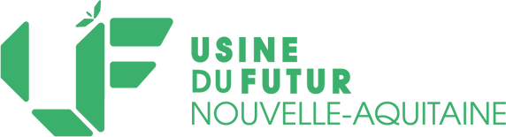
La cellule de coordination
Le programme
Programme de la Région Nouvelle-Aquitaine pour accompagner les PME et ETI industrielles vers l'usine de demain. L'AEPC NA, lauréate en 2024 et reconduite en 2026, coordonne 30 experts intervenant sur l'ensemble de la région.
Maillage territorial
Nous vivons ici. Nous connaissons vos entreprises.
Nos consultants vivent et travaillent en Nouvelle-Aquitaine. Ils connaissent les tissus économiques locaux, les particularités culturelles de chaque bassin et les dirigeants qui les font vivre. Résultat : des interventions de proximité, moins de déplacements, et une compréhension immédiate de votre contexte.
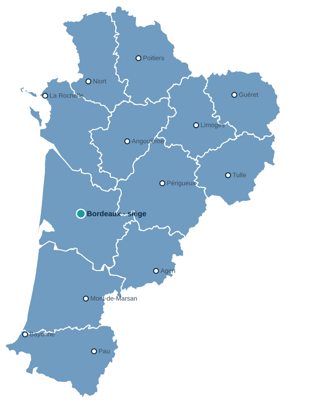
Écosystème
Un réseau de partenaires locaux et régionaux au service du territoire.
Nous nous appuyons sur des réseaux professionnels solides pour orienter chaque entreprise vers les bons dispositifs et les bonnes compétences.
Nos partenaires officiels
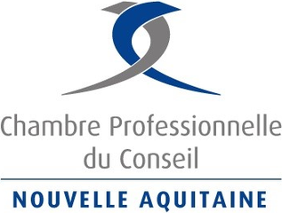
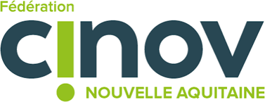
Membre de
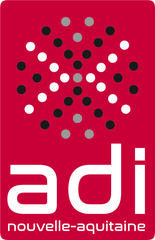
Ils nous ont confié des missions
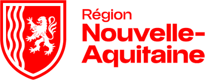
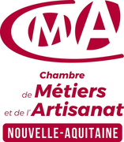
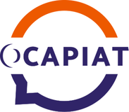
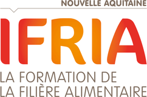
Nos offres
Quatre domaines, une même exigence de pilotage.
Performance industrielle & Usine du Futur
Diagnostic, Lean, organisation de production, financement de la modernisation.
Transition RSE — Actionnable
Parcours référencé par la Région (Néo Terra), en partenariat avec le syndicat Cinov Nouvelle-Aquitaine.
Formation professionnelle
Négociation commerciale, management, intelligence artificielle : des formateurs praticiens.
Stratégie & nouveaux modèles économiques
Transformation des organisations, économie de la fonctionnalité, écologie industrielle.
Réalisations
Des programmes régionaux confiés à notre collectif.
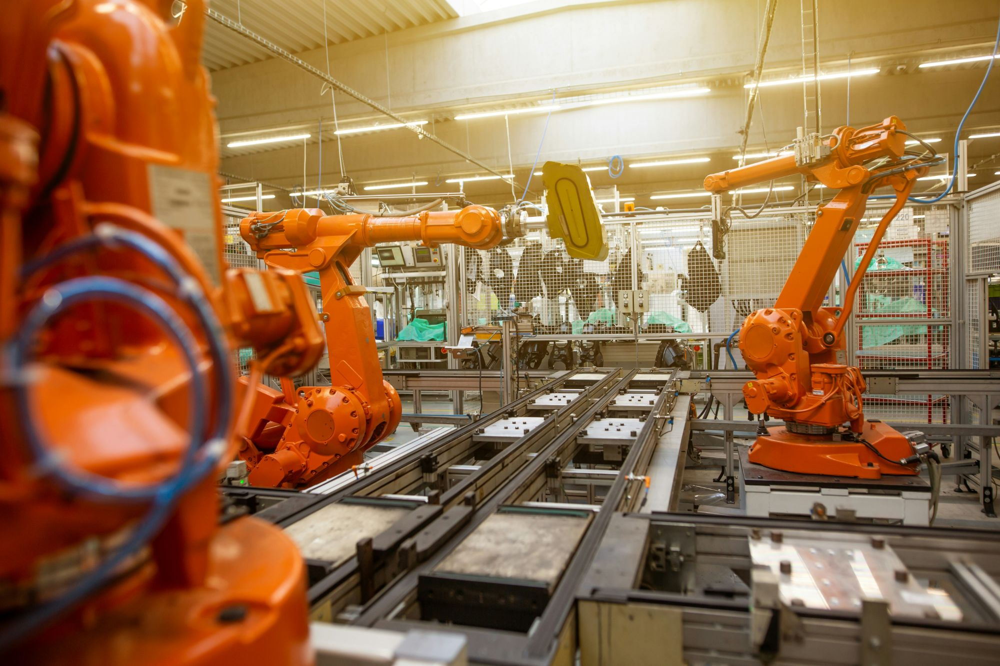
Région Nouvelle-Aquitaine · depuis 2024
Usine du Futur 4
Coordination de 30 experts sur l'ensemble de la région, par une cellule dédiée : chef de projet, PMO, spécialistes Éco-Finance et AeroExcellence.
AMI RSE Région · 2026
Actionnable
Parcours RSE retenu par la Région et référencé Néo Terra pour trois ans, avec le syndicat Cinov Nouvelle-Aquitaine.
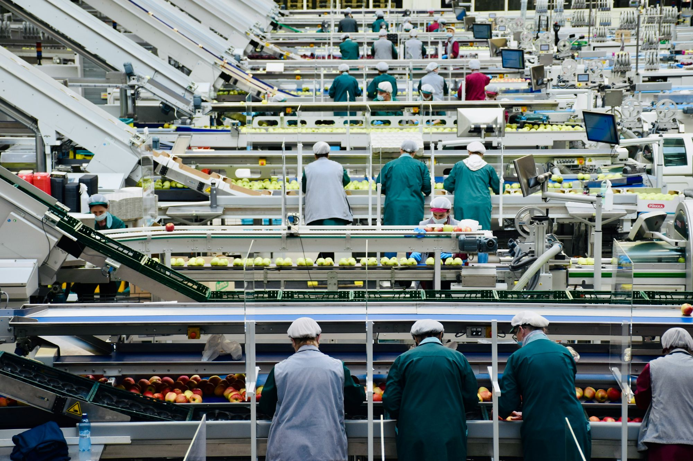
CMA · OCAPIAT–IFRIA
Négociation commerciale
Marchés de formation triennaux remportés collectivement pour les artisans et l'agroalimentaire.
Nos engagements et garanties
Charte de déontologie
Partagée par tous nos membres et partenaires, avec formation continue obligatoire.
Labellisation RSE LUCIE
Label RSO dédié aux métiers du conseil : nous appliquons à nous-mêmes ce que nous recommandons.
Qualiopi
Certification qualité de nos actions de formation.
Un cadre sécurisé
Vous contractez avec une association structurée : contrat unique, facturation unique, responsabilité claire.
Nous contacter
Parlons de votre projet.
Entreprise, collectivité, financeur ou consultant : décrivez-nous votre besoin, l'équipe de coordination vous répond et vous oriente vers les bons experts.